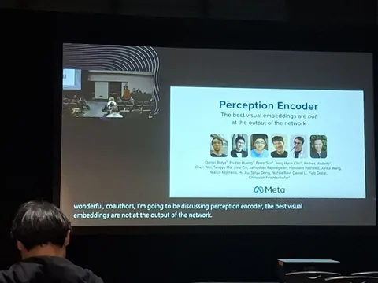
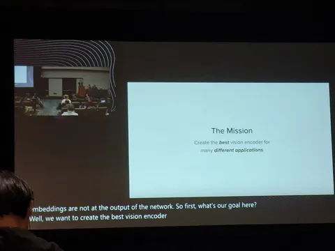
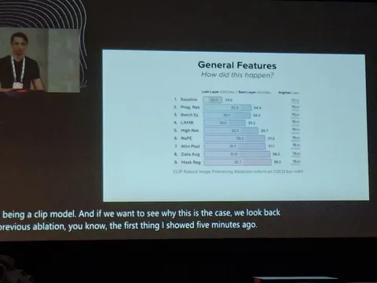
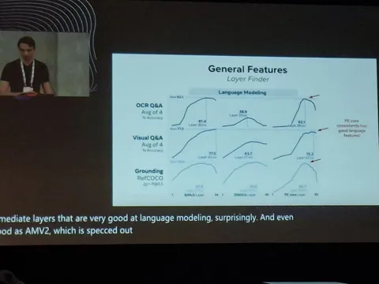
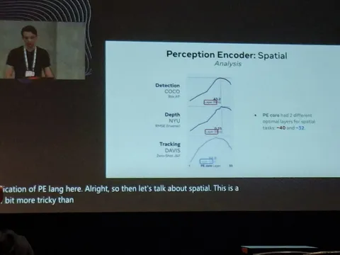
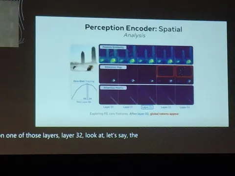
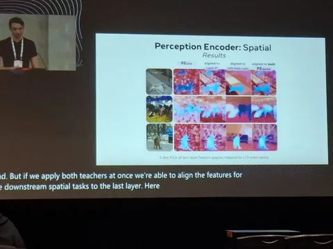

Червёртый день конференции в Мексике получился насыщенным. Было выступление Ричарда Саттона о его видении SuperIntelligence, две сессии со статьями и две — с постерами.
Самая интересная статья дня, по мнению Владислава Фахретдинова, — Perception Encoder: The best visual embeddings are not at the output of the network от Meta*. Мы уже разбирали работу в канале, а теперь делимся тем, что о ней говорят сами авторы.
Исследователи рассказывают, что поставили перед собой цель создать лучший визуальный энкодер для многих downstream-задач. Для этого двухстадийно обучались контрастив-лоссом на парах «изображение-текст» и потом — на парах «видео–текст», используя свою модель как кадровый энкодер.
Начав с CLIP-бейзлайна, добавили ряд улучшений и сравнили их по качеству и устойчивости. Уже на этом этапе модель достигла SOTA в zero-shot retrieval и классификации; назвали её PE_core.
Затем авторы протестировали модель как энкодер на разных downstream-задачах: детекции, трекинге, предсказании глубин. Увидели, что перфоманс оказался ниже ожидаемого.
В ходе исследования с помощью аттеншен-карт заметили появление глобальных токенов на определённом слое. Чтобы проверить гипотезу, стали брать эмбеддинги не с последнего слоя, а с предыдущих. Построив график качества по слоям для разных downstream-задач и моделей, увидели, что качество растёт к эмбеддингам средних слоёв, а к последним слоям — резко падает.
Для решения этой проблемы использовали два метода после обучения:
1. Чтобы сохранить глобальную информацию, провели файнтьюн на 41-м слое (который показывает близкие к лучшим значениям по всем задачам) с минимизацией косинусного расстояния между ним и последним слоем.
2. Чтобы сохранить локальную информацию, добавили файнтьюн на MSE попарного косинусного расстояния между эмбеддингами последнего слоя (H×W×1024 -> HW×HW) и попарного косинусного расстояния между логитами SAM для 1024 точек из равномерной сетки исходного изображения.
Эту модель авторы назвали PE_spatial и показали, что она достигает SOTA по многим downstream-задачам. Хотя вышедший позже DinoV3 достиг более высоких результатов, подход остаётся интересным.
#YaNeurIPS25
CV Time
___
Meta признана экстремистской организацией, а Facebook и Instagram запрещены на территории РФ
